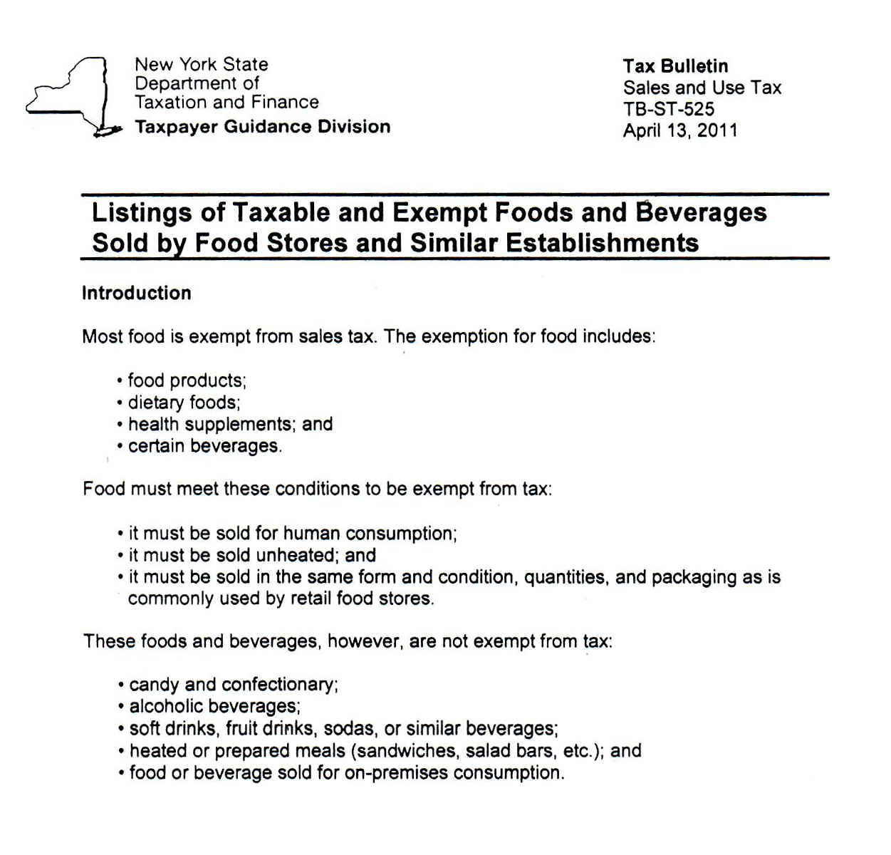
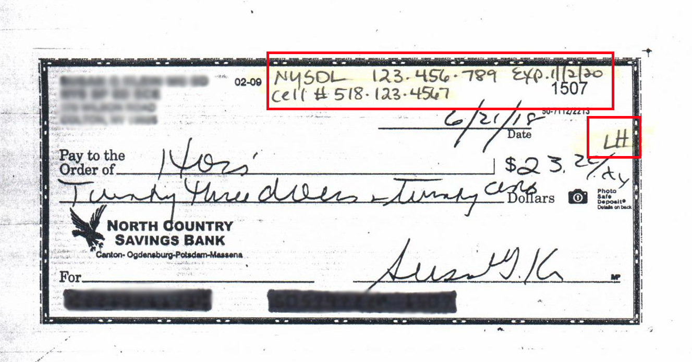
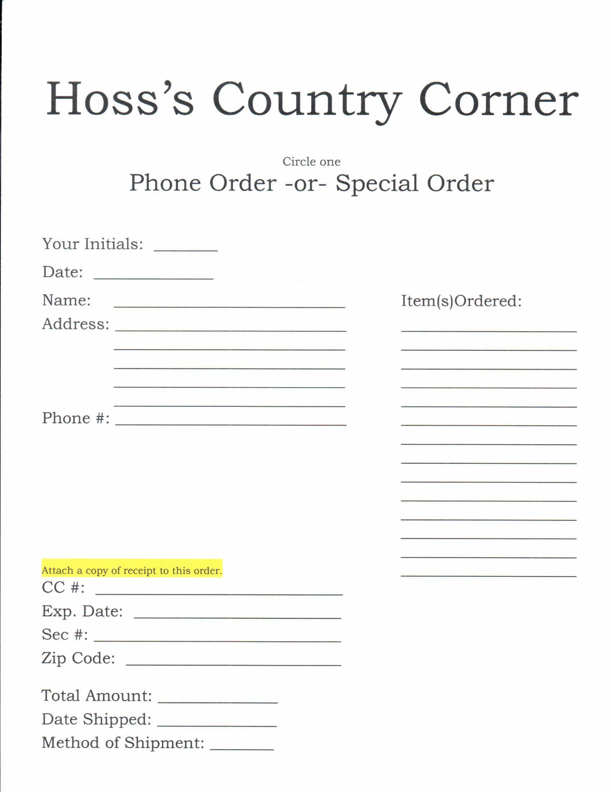

Hoss's Employee Handbook
Last Updated: June 10, 2021
We are happy to have you as an employee of
Hoss's Country Corner, Inc. We consider ourselves to be among the finest enterprises in the Adirondacks. Our reputation reflects that and it is of the utmost importance to us to maintain and improve our reputation in all aspects of our businesses.
As an employee of
Hoss's you have the daily opportunity and responsibility to enhance the quality of our service to the community. You must learn to do your duties in an efficient way, you must be cheerful and willing to do your share of the more difficult jobs and you must be knowledgeable about the many different services our customers expect to receive at
Hoss's.
Most importantly, your feelings about your job and toward the customer should be upbeat and positive in order for you to be effective in your work. Your attitude is your greatest contribution to our customers' needs.
We are committed to giving our "public" an exceptional experience in Long Lake and at
Hoss's in particular – No excuses and no compromises with quality and great service!
Your enthusiasm, smile and interest in our business are your most important assets. We look forward to your becoming part of the
Hoss's "family" and sharing our desire to give all our customers the very best.
What makes a good Hoss's employee?
- Nice appearance
- Strong work ethic
- Positive attitude
- Works well with others
- Punctual
- Attention to detail
- Responsible
- Self-starter
You are allowed
ONE free Long Lake/Adirondack T-shirt and
ONE ½ price Long Lake/Adirondack sweatshirt. Have Jules or Michelle record your choices with your initials/date in the Employee section of the binder under the back register.
Employee discount on gifts, books, clothing and sporting goods is 20%. No discount on foods.
The discount is for YOUR use only. Yes, gifts that you want to give are included. Sale items are excluded from further discount. Please do not purchase things for your family or friends with their money. Please have someone else ring up your sale. If you plan to charge an item to be paid for with your next paycheck, let Lorrie or Jules know how you intend to schedule your payments.
- Do not use your cell phones at work, except for medical reasons. If you bring it with you, you must leave it in the office. You may use it on your lunch break, but it must return to the office at the end of your break. Management may have phones for "Store Business" ONLY.
- Dress should be comfortable, but no short shorts. This means your shorts must be long enough to reach the middle of your thigh.
- NO use of distasteful language.
- Please, no gum chewing or eating behind the counter; take a break when it is time to eat. Talking to a customer when you have food in your mouth is most unpleasant.
- Employee parking is behind Hoss's facing the apartment house, NEVER in front of the store.
- You must play only the music we sell in the store and you must play it very quietly.
- No smoking in any Hoss's building at any time. Smoking breaks may be taken one at a time, and will count as part of your lunch break.
- Silliness, loud laughter and fooling around at the counters are inappropriate behaviors.
- Absolutely NO discussing customers in front of other customers.
- Friends are a gift from the Lord, but please do not allow them to take your attention away from customers by "hanging around", leaning on counters or distracting you in general. If you have a hard time telling someone that he/she is spending too much time in the store, ask one of us to do it for you.
- Be ready to work at whatever time you are scheduled. If you are asked to stay a few minutes late, feel free to put it on your time card, but in all fairness to us, be as prompt with your arrival as you are with your departure.(This means be in the store five minutes early!)
- Take care of personal matters on your own time. Personal shopping and other personal matters should be taken care of while you are clocked out. Schedule meetings and appointments on your days off. Do not schedule anything that demands your exit at exactly your quitting time. If someone is to meet you for lunch or after work, meet them elsewhere – not at any counter or on the front porch before you are finished working.
- Everyone can have a bad day…but these feelings cannot come to work with you or affect your attitude or relationship with our customers.
- Confidentiality is very important. Whatever you may learn about the store, Hoss's matters, customers and staff STAYS IN THE STORE. Please respect this. Do NOT give out employee numbers. ABSOLUTELY NO mention of celebrity customers may be put on Facebook or any other social media outlet. Do NOT react in any way when you recognize a celebrity.
- Employees are not allowed to access the internet on any Hoss's computers at the registers at any time. The Long Lake Library offers computers and internet access at no charge. There is a computer in the office that employees may access with permission. We will show you which one and how to use it.
- Remember – Our summer season is an exceptionally busy season. We all work very hard and sometimes longer hours than scheduled. Please maintain a good attitude when this is necessary.
- Employees are NOT permitted to leave the property except for lunch breaks unless they are asked to by a manager.
- Volunteer EMS/Firefighters: Full-time Hoss's employees may attend an emergency call. You must ask permission first. Clock out, please.
- If you need to change your scheduled hours, please notify Jules in writing before the schedule is made.
- The opening person, please have coffee made and floors mopped before the store opens. The opening people will complete the opening checklist.
- Closing people, please sweep very well and vacuum "dust bunnies" each night both upstairs and down so the floor can be mopped quickly in the AM. Follow the closing chores list at the back register near the clipboard. Please be sure ALL doors and windows are closed and locked before you leave. (Doors: upstairs near bathroom, front, back delivery and back entrance. Windows: ALL of them).
- At closing, please take care of anything you notice that is amiss.
- Please read and initial chore list everyday.
- We are always open for any suggestions you may have to make this work more smoothly. Thanks for all your help!!!
- Our pay week runs Wednesday through Tuesday and payday is Friday. Your paycheck will be direct deposited for your convenience. If you receive a paper check, feel free to have Lorrie, Jules, Nate or Michelle cash it here on Friday, assuming there is cash available in the register. If another employee is appointed to cash paychecks, he/she MUST initial the check.
- Time cards are to be filled out EVERY DAY. Your lunch hour must be noted. Please TOTAL your hours. cards are due no later than Wednesday 8am.
Example time card below:
NAME
Michelle Finley
|
DATE |
IN |
OUT |
IN |
OUT |
TOTAL |
| WED |
6/2 |
8 |
|
|
3 |
7 |
| THURS |
6/3 |
8 |
|
|
1:30 |
5.5 |
| FRI |
|
|
|
|
|
|
| SAT |
|
|
|
|
|
|
| SUN |
|
|
|
|
|
|
| MON |
6/7 |
8 |
|
|
2:30 |
6.5 |
| TUES |
6/8 |
8 |
|
|
2 |
6 |
|
|
|
|
|
TOTAL |
25 |
- Customers are our number one priority – without them, we would all be out of jobs!!
- Greet and chat with every customer (Good morning-afternoon-evening. Can I help you find something? Would you like a basket to put your goodies in or I can bring them to the register for you?) Make each customer feel important and most welcome. This entails never remaining seated and never carrying on a conversation (even about important store matters) when a customer is at the counter. Stop chitchat immediately, please. You can pick up where you left off later. Refer to customers as "Folks", not "Guys". (i.e. "Good morning Folks….)
- Absolutely NO gatherings behind any counter.
- If you are on the phone, even if it is a business call, either put the call on hold or hang up and call back later – our customers are our most important asset.
- Be certain not too look so busy stocking or doing inventory that a customer is afraid to "bother" you with a question.
- If someone asks the location of an item. BE SURE HE/SHE LOCATES IT. Often this means going and locating it personally. Be cheerful even when you must repeat directions.
- Know where our merchandise is in the store. Ask someone else if you are unsure of a location or whether we carry a certain item.
- Be sure to say, "thank you, have a nice day".
- Do not offer boxes or gift-wrapping but give them graciously when a customer requests them. Our gift-wrapping is green ribbon on our Hoss's boxes except on books which we wrap with paper.
- Nasty customers are few and far between, but they do exist. If one comes along, try to tell yourself that the customer is just having a bad day and doesn't mean to be so grumpy. Often your smile and your pleasantness will turn the day into a sunny one!
- Please answer: "Hoss's Country Corner, (your name) speaking."
- Answer the phone ASAP!!!!!, on the first or second ring.
- Limit personal calls to absolute necessity.
- Taking messages is important – write down on pink message slip:
- The time and date of call
- Full name of caller
- Number where caller can be reached
- The nature of the call
- Your Name
NO PETS are allowed in the store. Signs are at each door stating this.

Per the U.S. Dept. of Justice, only 2 questions may be asked:
- Is the dog a service animal for a disability?
- What work or task has the dog been trained to perform?
You are NOT allowed to request any documentation for the dog, require that the dog demonstrate its task, or inquire about the nature of the person's disability.
ONLY dogs are "Service Animals".
- Someone (NO more than two people) should always be at each register. However, if there is a slow period, find something to do (dusting, organize, sweep, fold, etc.). NO LEANING, JUST CLEANING. Larger projects will be assigned.
- Books and drinks have bar codes. Scan them.
- Tax vs. Non-Tax (a list is at each register for you to refer):

- Some books may have 2 barcodes, check to see that the bar code matches the title of the book. If a book does not scan, please leave a note with the title for Lorrie.
- A sales slip should be in every sack that leaves the store.
- Never write over or cross out any figures on register tape.
- We do not take food stamps or manufacturer's coupons of any kind.
- Open all tins and boxes brought to counter to make sure there are no hidden items.
- Check to make sure that the shoes and boots in a box are the same size and that they are the ones meant to be in that box.
- Canadian money is accepted at current exchange rate. Use the Canadian money button. Please do NOT circulate Canadian money. Place in the far-left slot in register.
- All food/grocery items purchased by staff must be paid in full at time of purchase and rung out by another employee. No discount to be applied on staff food/grocery purchases. Drinks may be left in the cooler with your receipt taped to the bottle. DISCARD when finished. DO NOT leave at your station until next day.
- Each register and the change drawer are counted separately. When you need to buy currency/coins for the drawer you are working with, buy currency/coins from the currency/coins exchange drawer at the front register. Let Lorrie or Jules know when you are using the last currency/coin change in the drawer to avoid emergency situations.
- Do not sell rolls of change to customers.
- When a customer pays in cash, always count back change to the customer! Count out loud up to the amount the customer gives, both as you are picking up change from the register and then again when handing the change to the customer.
- You should enter the amount of cash that a customer gives (using one of the cash buttons on the square or by manual entry) so the reciept is correct, but you should not rely on the change calculations done by the computer.
- Leave the cash that the customer pays on top of the register while you are counting.
- We will make sure you understand how to count change back correctly before you have to do it yourself!
ID EVERYONE for the sale of alcohol. NO ID…NO SALE!!
Failure to do so may cause you, the employee, a large fine and possible arrest by the NYS Police.
What is considered valid ID? A
driver's license or other photo ID such as a
Sheriff's card,
Military ID or
Passport. ID's issued through the government are more difficult to counterfeit.
- Check to be sure exchange is Hoss's merchandise.
- Offer to exchange or upgrade if customer pays difference.
- If you feel something is amiss or wrong, don't accept the return – GET HELP!
- REFUNDS AND EXCHANGES MUST BE ACCOMPANIED BY SALES SLIP, so please give customers one every time.
- Any refund must be done first on the cash register. Please do not try to give a refund until you know how to ring it out of the register. Get someone who knows how to do it to show you.
- If an exchange is done, the old item must be refunded on the register and the new one rung up. Write the exchange reason on the slip with your initials and leave in the register. To switch a size, nothing needs to be done UNLESS the size is a 2x or 3x.
- If a customer does not have a receipt, issue a gift certificate. If the customer does not have the receipt, but you sold the item and know for sure it was purchased, you may give a refund. If the customer has a receipt for a cash purchase, a cash refund may be given. If the item was charged on a credit card the refund must be done on the same credit card – no exceptions.
- If someone brings something back with a small stain, scratch, seam tear or damage that wasn't noticed at purchase time offer the customer a reduced price. These are things that would require us to mark the item down in price anyway.
- Put undamaged returned items back on the shelf.
- We take checks only if the customer has a valid driver license from which you MUST make certain the check signature, name and address matches the information on the license. Out of town/state checks may only be written for the exact amount of purchase unless otherwise approved by Lorrie, Jules or Nate. Write the driver license ID # and phone number to the right of the customer's name/address. This is our only means of checking current ID. Put your initials next to the $ amount box. DO NOT WRITE OVER ANY OTHER WRITING. (See example below)
- A local check may be written for extra cash. "Local" includes the following towns for year-round & summer residents: Long Lake, Indian Lake, Blue Mt. Lake, Newcomb, Tupper Lake and Raquette Lake. Write the driver license ID # and phone number to the right of the customer's name/address. This is our only means of checking current ID. Put your initials next to the $ amount box. DO NOT WRITE OVER ANY OTHER WRITING. (See example below)
- When taking travelers checks, be sure that they are for U.S. currency. For traveler's checks, the check holder's signature is all you need to see. The check has been signed once at the bank, it must be signed a second time in front of you.

ROA (Received on Account)
When a person is making a payment on an account they have with Hoss's it is referred to as Received on Account (ROA).
GIVE DIRECTLY TO A MANAGER. DO NOT ENTER IN REGISTER.
- WE ONLY TAKE BACK CONTAINERS WE SELL. NO EXCEPTIONS.
- Containers must be clean and able to stand up by themselves.
Master Card, VISA, AMEX, Discover, Diner's Club
Customer performs their own transaction on the credit card terminal. Instruct them to agree to the purchase amount then either swipe, insert chip, or tap, and follow the prompts on the terminal.
- Businesses and organizations must have proof (such as check or business card) that they are really in existence and authorized to make purchases. State law says a tax-exempt certificate must be signed and, in our files, or we are liable to pay the tax.
- There are different certificates for organizations and businesses. A few certificates are kept by the phone at the front counter.
- Please do not sell things without charging tax unless these criteria are met.
- Keep customers in town at all costs. Recommend other places in Long Lake to buy items we do not have. Make certain these desired items are written in the "want book" at back counter. If a customer must go to Tupper Lake for ONE thing, he/she will go for EVERYTHING.
- No deposit required. Please use the "Hoss's Phone/Special Order" sheets to gather all important information needed to complete the order. Fill out form and add stock number, color, size, quantity. If a book, title of book, ISBN and whatever else is necessary for Jules to order the item. Tell customers we will call when the item comes in – or we will let them know immediately if the item is unavailable; put order on clipboard by the back room. Once the order is shipped, attach a copy of the CC receipt to the order sheet and put order on clipboard by the back room. Another copy of the reciept will be sent with the order.
- Offer to order something we don't have if there is no suitable substitute for a customer in the store.
- When order comes in, call customer and place items at the front counter with the customer's name.

Processing Incoming Merchandise
- Please notify Lorrie or Jules each day of every shipment that is delivered by truck or UPS as soon as it comes in.
- All merchandise must be checked in personally before you sign the invoice. This includes all food deliveries.
- When unpacking groceries and drugs, check expiration dates (butter, crackers, OJ, etc.) to be sure there is enough time left to sell the items. (i.e. If 01/01/18 is the date you are unpacking the goods and you notice an item with an expiration date ten days or less from the day, DO NOT put it on the floor for sale. Set it aside with a note for Jules, Nate or Michelle for immediate attention).
- Count cartons; check cartons for damage before signing UPS or trucking company sheets; make notation on trucker's form if there is damage to boxes. On our special pad hanging in the delivery room, record date delivered, number of boxes, and delivered by UPS, FedEx, or other shipping methods. Boxes are listed by the company name of shipper and by number of boxes. Please keep all relative boxes together. Tell Lorrie, Jules, Nate or Michelle when a shipment comes in.
Packing lists
(The sheet of paper that comes in a carton of merchandise.) It tells what items have been included in this shipment. The items may be contained in more than one carton. Often there are no prices on a packing slip, although it is usually a carbon copy of the invoice.
Initial and date any packing list you use for marking goods. Place finished packing list on the clipboard near cooler door.
The Invoice (the Bill):
Treat it as though it were a $100.00 bill and
never leave one lying around. Be certain that we receive every single item mentioned on the invoice or packing slip. Initial and date any invoice you use for marking goods.
Shortage or breakage
Leave very clear notes to Jules, Lorrie or Michelle about breakage/shortage and attach to the invoice or packing slip. Save the outside container of any broken items. When through with the invoice, put items and invoice in a bag and put upstairs by Jules, Lorrie or Michelle's desk.
Notations
Make sure all notations are very clear on packing lists and invoices so that anyone can pick up where you left off pricing a shipment without confusion. Use a separate sheet of paper if necessary to list problems. DO NOT cross out ANYTHING.
Never cover over any number or words on an invoice. Never use marker or red pen on an invoice. Always use pen or pencil when checking off items or making notes.
- Pricing should be easy to see, easy to remove for gift purposes or to change price. DO NOT cover up the size labels on clothing. Put price on the back of the size label. Be sure any labels will not damage merchandise. Use the hangtag already found on many items to attach our price label. On small items use small hang tags to avoid messy appearance. Do not use magic marker on anything, except for Red Dot items.
- As a rule, be sure all items are unpacked, priced and put out for sale before going on to another shipment. Initial and date any order you have unpacked. Write "OK" if everything is correct. Write "Not OK" if there are any problems with the shipment. Nothing is to be put on the 3rd floor until it is out for sale on the shelves. If you are not sure where something goes ask Jules, Michelle or Nate.
- Do not clutter counters or floor space needed by customers or other workers when unpacking a shipment. Work neatly in small quantities. Put all pricing material away reloaded and ready for the next use.
- If working on a large invoice with many boxes, take it one box at time to where you are working. When you have taken care of that amount, get more to work on. Don't ever leave packing material or half-finished invoices behind any counter when you leave for the day.
- Remove all staples from shipping cartons and discard before unpacking a shipment. Be sure not to leave small items like jewelry on counter while you are marking it (it is too easy to steal by the handful).
- Cardboard boxes need to be broken down (flattened, not stomped) and put in the correct trash bin outside. All garbage bags inside must be doubled bagged especially if there are "Styrofoam Peanuts" in them.
- When selling live bait, please count fish carefully.
- Dead fish should be removed daily from the tank.
- Dead fish should be put in the small trashcan by the sink. Remove liner bag immediately, tie up the bag, and place in dumpster
This is the most potentially dangerous piece of equipment we have. If you follow the proper use and cleaning of this device and use caution, no one will ever be injured.
This piece of equipment must be wiped down after EVERY use and broken down for cleaning at the end of EVERY night.
UNDER PENALTY OF LAW AND POSSIBLE TERMINATION ABSOLUTELY NO ONE UNDER THE AGE OF 18 CAN TOUCH THE SLICER, NOT EVEN TO CLEAN IT - NO EXCEPTIONS, EVER
Proper Use:
- Wash hands thoroughly and put gloves on both hands.
- Unwrap the piece of food you wish to slice.
- Place the food on the slicer, with the previously sliced side facing down.
- Move the hand guard over the piece of food.
- Ask the customer their desired thickness and adjust the knob.
- Place a deli paper on the stainless-steel plate to catch the meat. Turn the slicer on.
- Place one hand on handle and one on guard. Push forward with one clean motion and pull back. If you did this right, you will have one slice of meat on the deli paper on the stainless-steel plate.
- Remember never to place your hands near the blade for any reason while the slicer is on or plugged in.
- Slice away but be cautious. This is a large moving blade you are using.
After Each Use:
- Make sure the slicer is off; thickness size guard set at a negative setting, so blade is not exposed.
- Remove the piece of food that was being sliced, wrap it up and return it to the fridge.
- Spray with bleach water; wipe down all dirty areas where food might have fallen or dripped. Including the catch cup between the blade and the plate.
End of the Night Cleaning:
- Make sure the slicer is off, the size guard is at a negative and the machine is unplugged.
- Remove all pieces to be cleaned to the sink in the back room.
- Remove all parts that the food sits on.
- Remove the guard on top of the blade, use extreme care because the blade is now fully exposed.
- Remove the door and the food catch.
- Remove the plate on the base.
- Be sure to clean the arm that holds the meat in place very carefully, there are spikes here that hold the meat in place that tend to get covered with debris.
- Wash down the entire machine with water, soap and bleach, including the blade. BE CAREFUL. Also, don't forget the underside of the blade. It is usually caked with food.
- Wash all around and under the machine. Stuff drips down onto the counter.
- Put all clean parts back where they came off and plug machine back in.
- Do not set items on the meat block or food prep area (between the cheese block and slicer).
- Wear gloves whenever you are handling food.
- Change gloves if you touch something besides food. (i.e. Money) Gloves are cheap so don't reuse them.
- Clean knives immediately after use and put away in the knife holder, NO EXCEPTIONS.
- Do not use knives to cut anything but food.
- Always make sure deli area is spotless. That means if you are pricing items or unpacking boxes at the back counter you must constantly do it neatly.
- Meat case MUST be freshened with new aluminum foil on the shelves every day.
- Deli meats MUST be wrapped with new plastic after each use.
- Everyone must pull their hair back and wear a hat/hair net while working in the deli.
- First impressions are hard to change.
- CHECK THE "CHORE LIST" AND BE SURE TO DO YOUR "CHORE" FOR THE DAY EVERY DAY. CHORES ARE LISTED ACCORDING TO THE TIME YOUR SHIFT BEGINS.
- Be neat – please put all scissors, tape, pens, etc., away when you are finished – especially at the end of your shift.
- Counter space should be clean and neat, not be cluttered with anything. (i.e. stock pricing, catalogues, order pads, your drink or food). Do not leave anything undone behind the counters. Counters are work areas used to serve the customers – keep them clear. NO excuses.
- Coffee station/pots should be neat, clean and always stocked.
- Notice condition of floor – if it needs sweeping, sweep it. Some days this must be done several times. If something gets spilled, get a mop and clean it up quickly. Don't let stickiness get tracked all over the store.
- Dusty shelves and merchandise turn customers off – it is a constant process to keep things clean – please do your share every day.
- If a customer returns an item, or changes their mind on a purchase, put the item away at once. Do not allow things to collect behind any counter.
- Clean up during and after pricing a shipment. Sweep packing material off floor if necessary. If packing material is styrofoam peanuts, make sure they are double bagged and then taken care of properly. Do not clutter aisles with cartons while unpacking a shipment. Break down all cardboard boxes before discarding. Throw them in the cardboard dumpster beside the regular trash dumpster.
- Keeping the store neat and clean is YOUR job all day, every day, no matter "Whose" chore it is. Be aware of messy spots and clean them up.
- Clean every shelf you stock. Use warm water and Murphy's Oil Soap on wooden shelves. Be sure shelf is dry before putting merchandise on it.
- Bring old merchandise forward, put new behind old.
- Change prices on old merchandise if necessary.
- Write down items we are out of on a piece of paper and tape to the back of the knife case to the right of the back register.
- Dust merchandise still on shelf. If merchandise is broken or needs mending, product waste or mend broken items – Take care of things at once, do not allow things to collect behind any counter.